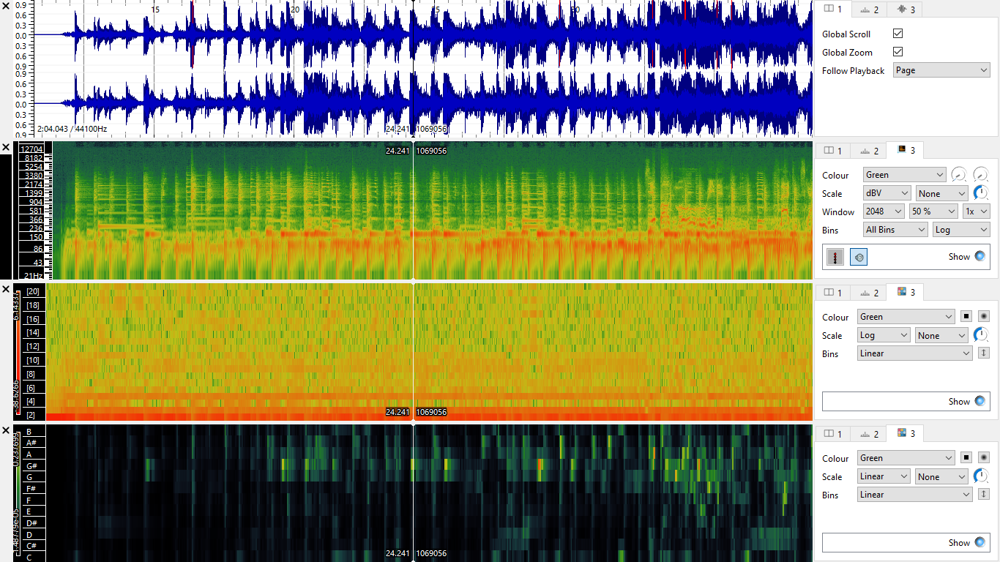
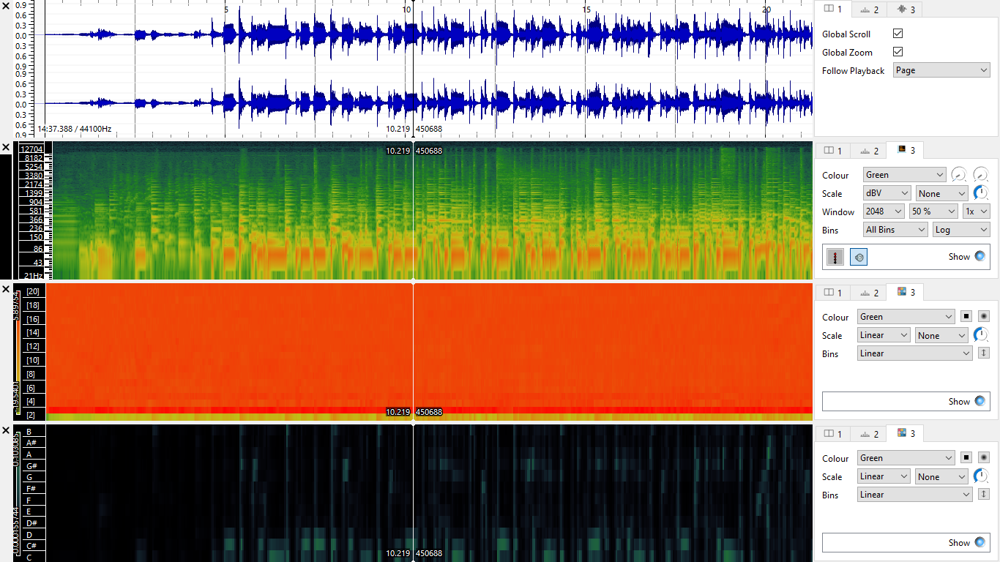
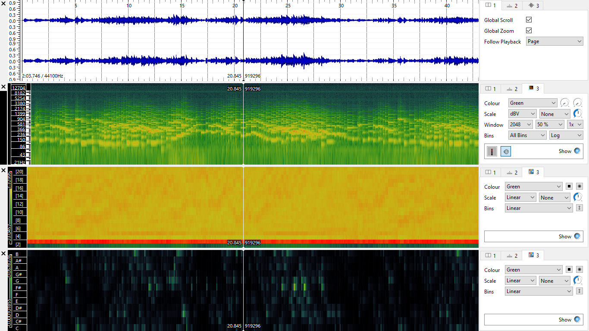

Music Curation and Analytics 2020
Week 9: Extracting Meaning from Audio
Task 1
Extracting Spectrogram, Mel Frequency Cepstral Coefficients and Chromgrams of three tracks
I used the same three tracks identified during last week's lab to maintain a coherence in audio analysis.
Important: to display a full size image, please click on the selected image and it will open in new window.
Baltimore Raven: Spectrogram, Mel Frequency Cepstral Coefficients and Chromgram

Caravan: Spectrogram, Mel Frequency Cepstral Coefficients and Chromgram

Variatio 2 a 1 Clav.: Spectrogram, Mel Frequency Cepstral Coefficients and Chromgram

Task 2
Computing and Visualizing Histograms of Features
Spectrogram Histograms
Mel Frequency Cepstral Coefficients Histograms
Mel Frequency Cepstral Coefficients (MFCCs) represent 20 features, which are used to describe the timbre of the song ('colour' of the song).
Chromgram Histograms
Chromagrams represent 12 different pitch classes, which are used to descibe melodic features of the song.
Histograms Comparison
Mel Frequency Cepstral Coefficients histograms of the three tracks represent differences between these songs. MFCC is used to describe a timbre or the 'tone quality'.
The three tracks represent distinct genres: blues, jazz and country. Therefore, the timbre of each song should be different. It is precisely the case. MFCC histograms
are different from each other, which indicates the difference in timbre between songs. Histogram of Bach's Variatio 2 a 1 Clav., a classical piece, is the most different from the all three, also instrument-wise.
Baltimore Raven and Caravan, though represent different genres, are more similar to each other. However, this similarity is not hugely represented on histograms. Jazz and blues have similar root and sometimes use the same instruments, like drums.
However, Variatio and Caravan both use piano some similarity between the songs MFCC histograms could be expected. Yet, the visual output does not suggest similarities. The differences mentioned can be expected to be heard in the audio files of the songs.
The distinct outlook of each of the histograms underlines the usefulness of MFCC in genre classification.